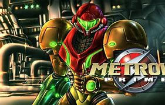

"Metroid Prime" es un hito en el género de los videojuegos, llevando la legendaria serie Metroid a nuevas alturas con su impresionante diseño, atmósfera envolvente y jugabilidad innovadora. Ambientado en un vasto mundo alienígena lleno de secretos y peligros, el juego sumerge a los jugadores en la piel de la cazarrecompensas Samus Aran mientras explora ruinas antiguas, lucha contra enemigos despiadados y desentraña misterios cósmicos. Con una combinación magistral de acción en primera persona, exploración y resolución de acertijos, "Metroid Prime" ofrece una experiencia de juego inmersiva y satisfactoria. Además, su brillante dirección artística, banda sonora atmosférica y gráficos impresionantes ayudan a crear una atmósfera única que sigue cautivando a los jugadores hasta el día de hoy. En resumen, "Metroid Prime" es un clásico atemporal que merece su lugar entre los mejores juegos de todos los tiempos.
